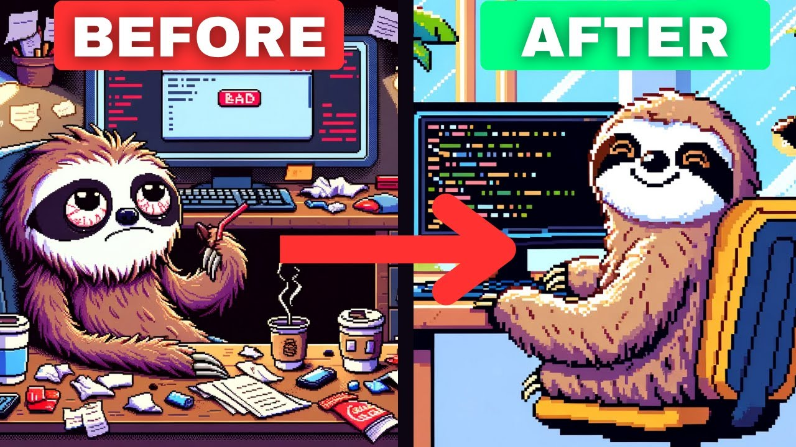

Beginning Software Engineering
October 11 2026

Some thoughts about beginning coding in 2026! Why I've begun, my path/goals, my struggles/anxieties and other thoughts.
P.s. thank you the Coding Sloth for being my introduction to coding!
Why did I start?
In short terms, better career control, I am great at learning, gives me a good challenge and I respect STEM it's awesome.
It was super scary starting out and deciding to code, or at least try software engineering as a career with little experience.
I have a BBA degree and as proud of myself as I am for this accomplishment, I didn't feel very satisfied
with what the certification could do for me by itself
and the experience of getting it. A BBA by itself isn't worth
much unfortunately, you need an extra certification, experience or a hail mary opportunity
at a company in order to build that experience. That makes me feel stuck, I don’t have the money for another certification,
I only have months of experience interning so that puts me up to the final option of just praying for a shot.
It really feels like a humiliation ritual putting everything I have out there for companies to weigh my value using a scale I shouldn’t be weighed on.
I don't have 10 years of experience, I can't have that much. My skills are that of a beginner, they are supposed to be.
I want to be beginner and work my way into intermediate but before my effort can get a chance to speak for itself,
it requires someone to give that beginner a chance to distinguish themselves. It feels like it’s not in my hands.
I am proud of my degree but it feels like a car depreciating in value everyday past the day you got it and it’s out of my hands to raise it.
On the bright side, this is a major reason I decided to go with software engineering, I feel like I have so much more control over my career.
I can build projects that speak for themselves, distinguish myself and work towards starting a career I can be proud of.
A minor reason I wanted to pursue software is the challenge. In my BBA there were some hard, evil classes like stats class dear God.
But for the most part I didn’t feel pushed enough to feel fully satisfied.
I want to try something considered truly difficult by others and give my everything at it.